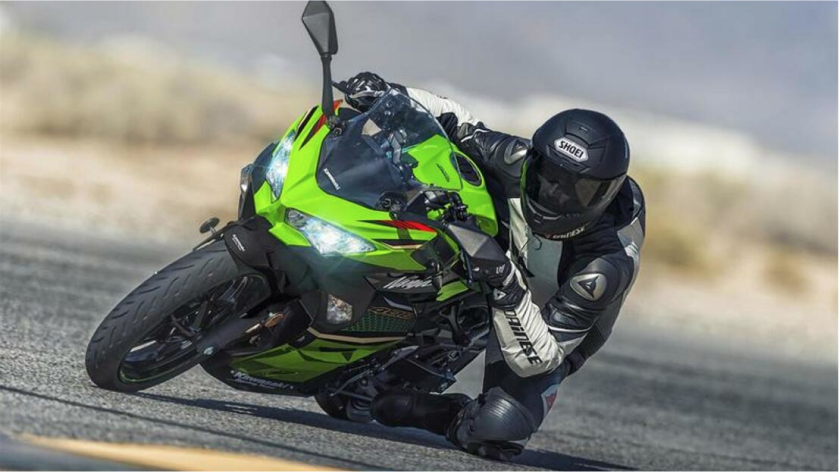
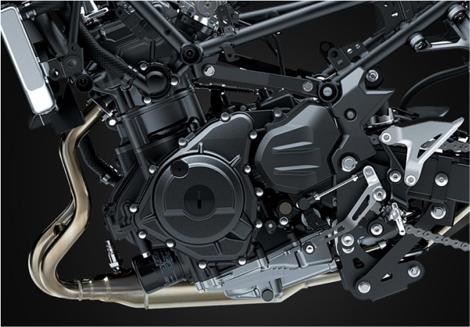
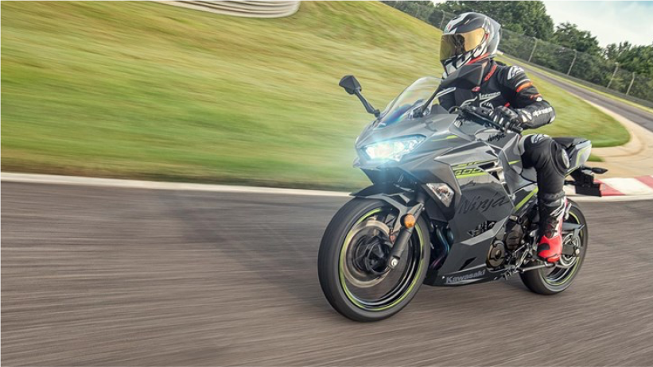
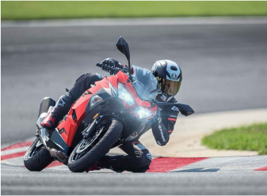
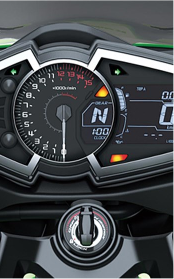
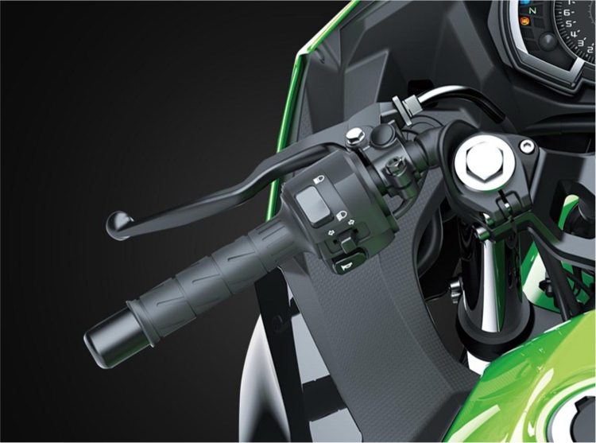

KAWASAKI NINJA MY 2020
Approachable power, superb ergonomics and class-leading performance offer a smooth, manageable ride that's ideal for new riders
GET READY TO RULE ALL ROADS
Get ready to enter a world of endless roads, endless possibillities.
The Ninja® 400 offers the largest displacement in its category at 399cc with the sophistication of twin-cylinder power. A low seat height and aggressive styling with LED headlights make the Ninja 400 the ideal choice for riders looking to enter the sport-riding scene.
CLASS-LEADING POWER
The four-stroke, 399cc twin-cylinder is the largest displacement engine
In its class and delivers smooth easy-to-use power for maximum rider confidence while also offering outstanding fuel efficiency.
MODERN SPORTY FEEL
The Ninja® 400 motorcycle engine delivers the perfect balance of high-performance thrills and easy-to-use power.
The Ninja® 400 motorcycle’s chassis dimensions were designed to deliver confident handling with a modern sporty feel at all speeds
25 OCT 20
Best Standard Motorcycles To Commute On. Picking the right motorcycles for commuting truly lets you mix business and pleasure.
25 OCT 20
2022 Indian Motorcycle FTR First Look Preview Indian Motorcycle turns its street-legal FTR tracker into a road bike.
25 OCT 20
Ducati Delivers 350,000th Monster Motorcycle The most popular Ducati motorcycle model family of all time
ASSIST & SLIPPER TECHNOLOGY
The high-grade cockpit of the Ninja® 400 motorcycle features a multi-function dash meter that includes a gear position indicator.
 The assist function provides an exceptionally light clutch pull and produces a wide clutch engagement range for comfort and confidence. The slipper function reduces the effect of back-torque for smooth and seamless downshifts.